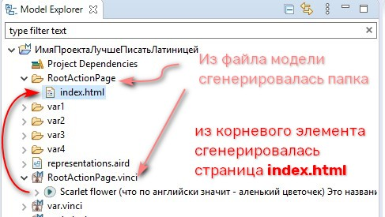
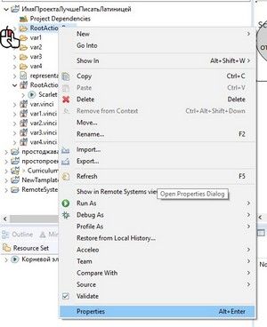
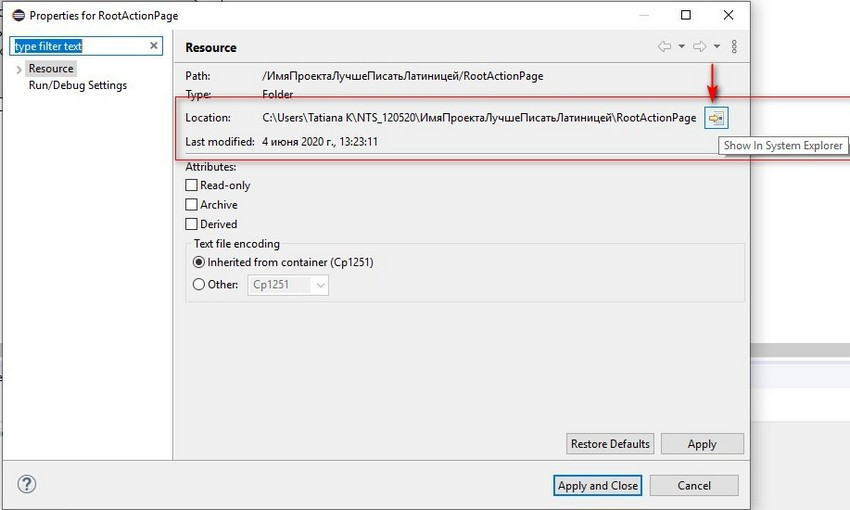

Генерация страницы - это процесс создания из модели набора HTML файлов. В процессе генерации внутри проекта создаётся папка, в которую и размещаются сгенерированные файлы. Имя папки = имя vinci.модели.
Для того чтобы запустить процесс генерации необходимо:
После процесса генерации в области Model Explorer появляется папка, в которой содержатся сгенерированные файлы. Раскрываем стрелочкой эту папку и видим, что в ней на данный момент содержится только файл index.html.

Сгенерированный файл можно открыть тремя способами:
Если мы сделаем двойной щелчок по файлу в области Model Explorer IDE Eclipse, то он откроется во встроенном браузере. Этот вариант нас не устраивает, так как всроенный браузер не всегда корректно отображает сгенерированные страницы.
Поэтому нам необходимо найти сгенерированный файл в файловой системе и открыть его. Для этого:
И из этой папки файл можно открыть в веб-браузере, используемом в вашей операционной системе по умолчанию.
Открываем и видим, что у нас получилась вот такая страница. Результат скромный, потому что наша модель состоит всего из одного элемента. Если мы построим более сложную модель, то и результат будет более впечатляющим.
В первую очередь нам необходимо создать навигационный каркас сайта >>>
 